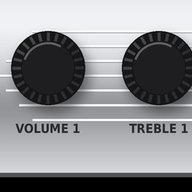
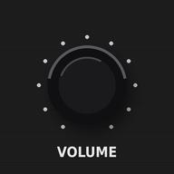
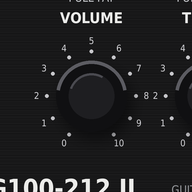
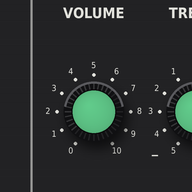
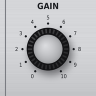
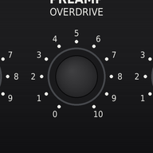
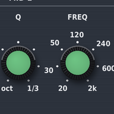
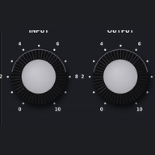
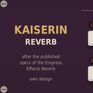
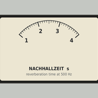

Verstärker-Simulatoren
Verstärker mit Bauteilwerten aus den Original-Schaltplänen und exakter Schaltungsberechnung. Auf dem Handy lassen sich die Seiten zum Startbildschirm hinzufügen und laufen dann auch offline.
Lametta B100-II KlangreglerTreble, Middle, Bass des Transistor-Bass-Combos, geprüft gegen die Werkskurve, mit Anhören eigener Audiodateien. Laney AOR 50 VorverstärkerKompletter Röhren-Vorverstärker mit beiden Kanälen, Boosts, Umbau-Kondensatoren und Anhören eigener Audiodateien, optional mit geschätzter Röhrenverzerrung, Endstufe und Federhall nach dem Plan (ab 3.35).
AmpFett B-15NF PortaflexDer ganze Röhrenverstärker nach Werksschaltplan (1966): beide Kanäle, Phasenumkehr, Endstufe mit 6L6GC, Netzteil und Lautsprecher, geprüft gegen die Spannungstabelle des Werks.
GK 800RBDer Transistor-Bassverstärker nach dem Service-Manual (1991): Vorstufe mit −10 dB, LO CUT, MID CONTOUR, HI BOOST, vier Klangreglern und der BOOST-Stufe mit J113-FET, Bi-Amp-Weiche, beide Endstufen (300 W / 100 W) und Lautsprecher, geprüft gegen die Prüfpegel und Oszillogramme des Manuals.
Lametta G100-212IIDer Transistor-Gitarrenverstärker nach dem Service Manual (1979): Kanal A sauber, Kanal B mit Begrenzerdioden und FET-Stufe, Zugschalter FAT und BRIGHT, parametrischer EQ, Federhall (Schaltung und Feder als physikalisches Modell, nichtlinear: eine schwingende Feder reagiert anders auf den nächsten Anschlag), Endstufe mit Begrenzung; wahlweise mit den beiden Lautsprechern (2 × Celestion G12T-75, offene Box). Geprüft gegen die Prüftabellen des Manuals.
Lametta B100-IIIDer Transistor-Bassverstärker nach dem Service Manual (1984): Eingangsstufe, aktive Klangregelung mit Transistor-Gyratoren, zwei vollparametrische Entzerrer mit PRESET LEVEL (ein- und ausschaltbar wie mit dem Fußschalter), 100-W-Endstufe mit Begrenzung; ohne Lautsprecher. Geprüft gegen die Spezifikation des Manuals.
AmpFett SVT-CLDer 300-W-Röhren-Bassverstärker nach dem Service Manual des Ampeg SVT-CL: Eingänge 0 dB / −15 dB, Vorstufe mit 12AX7, Klangregelung mit fünfstufiger Mittenfrequenz, ULTRA HI/LO, Phasenumkehr, Treiber mit 12AU7, Endstufe mit sechs 6550, Ausgangsübertrager (4 oder 2 Ω) und Netzteil, alles in einer Rechnung; ohne Lautsprecher. Geprüft gegen die Signalpegel im Plan und die Herstellerangaben.
Loldano SLO-100Der 100-W-Röhren-Gitarrenverstärker nach dem Schaltplan des Soldano SLO-100: NORMAL-Kanal mit BRIGHT und CLEAN/CRUNCH, OVERDRIVE-Kanal mit der „kalten“ Stufe, Kanalumschaltung über Fotowiderstände, Klangregelung, zwei MASTER, Phasenumkehr, vier 6L6GC, Ausgangsübertrager mit Gegenkopplung und PRESENCE, Netzteil und ein Lautsprecher als Last, alles in einer Rechnung; ohne Boxensimulation. Geprüft gegen die Spannungen im Plan.
Wien EQKein Verstärker, sondern ein Fünfband-Equalizer mit Wien-Brücken nach den veröffentlichten Angaben zum adt-audio TM205 (eigener Entwurf, kein Schaltplan): LOW und HIGH mit je zwei Tasten, drei vollparametrische Mittenbänder von 20 Hz bis 25 kHz mit 5 Oktaven bis Terz Bandbreite, EQ ON, Regelbereich ±6/±12/±20 dB.
AmpFett 76Kein Verstärker, sondern ein FET-Kompressor: Nachbau des UREI 1176LN nach dem Schaltplan (INPUT, OUTPUT, ATTACK, RELEASE, vier RATIO-Tasten, auch alle zugleich), dazu stufenlose Ratio, DRY, Hochpass in der Seitenkette und eine zweite Stufe nach dem Vorbild des Origin Effects Cali76. Mit Kennlinie und Anzeige der Gain Reduction.
Kaiserin ReverbKein Verstärker, sondern ein Hall mit der Bedienung des Empress Effects Reverb (eigener Entwurf nach der Anleitung, das Original rechnet mit unveröffentlichten Verfahren): HALL, PLATE nach Dattorro, SPRING mit demselben Federmodell wie Laney und G100, ROOM, MOD und SPARKLE mit Oktave im Nachhall; DECAY, MIX, OUTPUT, LOW, HI, THING 1/2 und HOLD. Mono rein, stereo raus.
Blech 140Kein Verstärker, sondern eine Hallplatte nach dem EMT 140 als physikalisches Modell: gespannte Stahlplatte 2 m × 1 m, alle etwa 23 000 Eigenschwingungen bis 18 kHz mit ihren Dämpfungen, daraus die Impulsantwort, gefaltet ohne Verzögerung. DECAY wie die Dämpfungsplatte (1–3,8 s bei 500 Hz, Instrument und Lampe MOTOR), BASS CUT 0–3; dazu MIX, PRE-DELAY und OUTPUT. Mono rein, stereo raus (zwei Abnehmer).Für die DAW
Mac: alle Plugins für Logic ProInstallerpaket mit Laney AOR 50, Lametta B100-II, AmpFett B-15NF, GK 800RB, Lametta G100-212II, Lametta B100-III, AmpFett SVT-CL, Loldano SLO-100, Wien EQ und AmpFett 76 als Audio Unit (Logic, GarageBand, MainStage) und VST3 (z. B. Ableton, Cubase, Waves StudioRack), für Apple Silicon und Intel ab macOS 11. Mit Frontplatte zum Drehen, Modell-Schaltern und Frequenzgang wie unter Linux.
Mac-Installer herunterladen
Laney 3.46 · Lametta B100-II 1.21 · AmpFett B-15NF 1.26 · GK 800RB 1.7 · Lametta G100-212II 1.12 · Lametta B100-III 1.8 · AmpFett SVT-CL 1.11 · Wien EQ 1.4 · AmpFett 76 1.2 · Loldano SLO-100 1.2 · einzeln abwählbar · Doppelklick, durch den Installer klicken (Administrator-Passwort), Logic neu starten; die Plugins stehen unter Audio-FX → Audio Units → tonestack. Das Paket ist nicht bei Apple beglaubigt: beim ersten Öffnen unter Systemeinstellungen → Datenschutz & Sicherheit „Dennoch öffnen“ wählen (macOS 11–14: Rechtsklick → Öffnen). Logic nicht mit Rosetta starten: die Plugins laufen nativ auf Apple-Prozessoren, unter Rosetta deutlich langsamer.
Linux: alle Plugins für die DAWLaney AOR 50, Lametta B100-II, AmpFett B-15NF, GK 800RB, Lametta G100-212II, Lametta B100-III, AmpFett SVT-CL, Loldano SLO-100, Wien EQ, AmpFett 76, Kaiserin Reverb und Blech 140 für Linux x86-64 (REAPER 7, Bitwig, Ardour, Qtractor), je als CLAP und VST3 mit Frontplatte zum Drehen, Modell-Schaltern und Frequenzgang.
Zu den Linux-Plugins
Einzeln herunterladen, mit Versionen, Neuerungen und Hinweisen zur Installation.